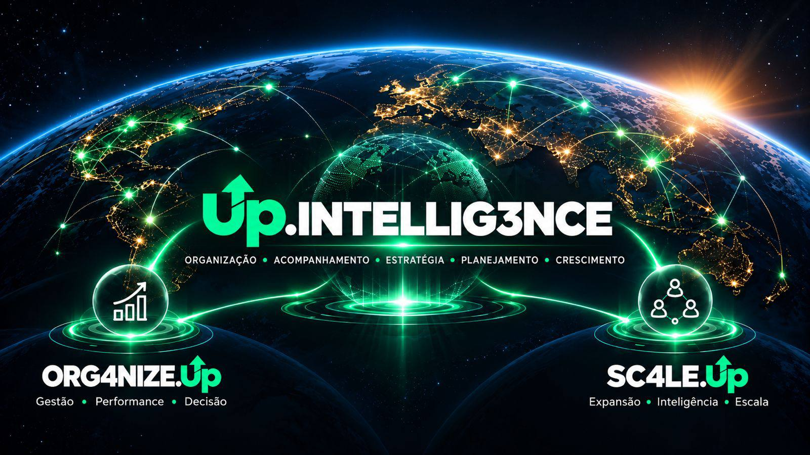

ORG4NIZE.Up
Para pequenas e médias empresas que querem organizar as finanças, a rotina administrativa e a operação.

A Up Intelligence reúne a experiência de Marinho Ponci e soluções para empresários que querem cuidar melhor da gestão e planejar o crescimento de suas empresas.
Conheça as soluções da Up Intelligence e encontre aquela que acompanha seu próximo passo.
Para pequenas e médias empresas que querem organizar as finanças, a rotina administrativa e a operação.
Uma plataforma que reúne a inteligência e a experiência de Marinho Ponci para empresas que querem planejar sua expansão.
Converse com a equipe sobre o momento do seu negócio.
Vamos conversar ↗